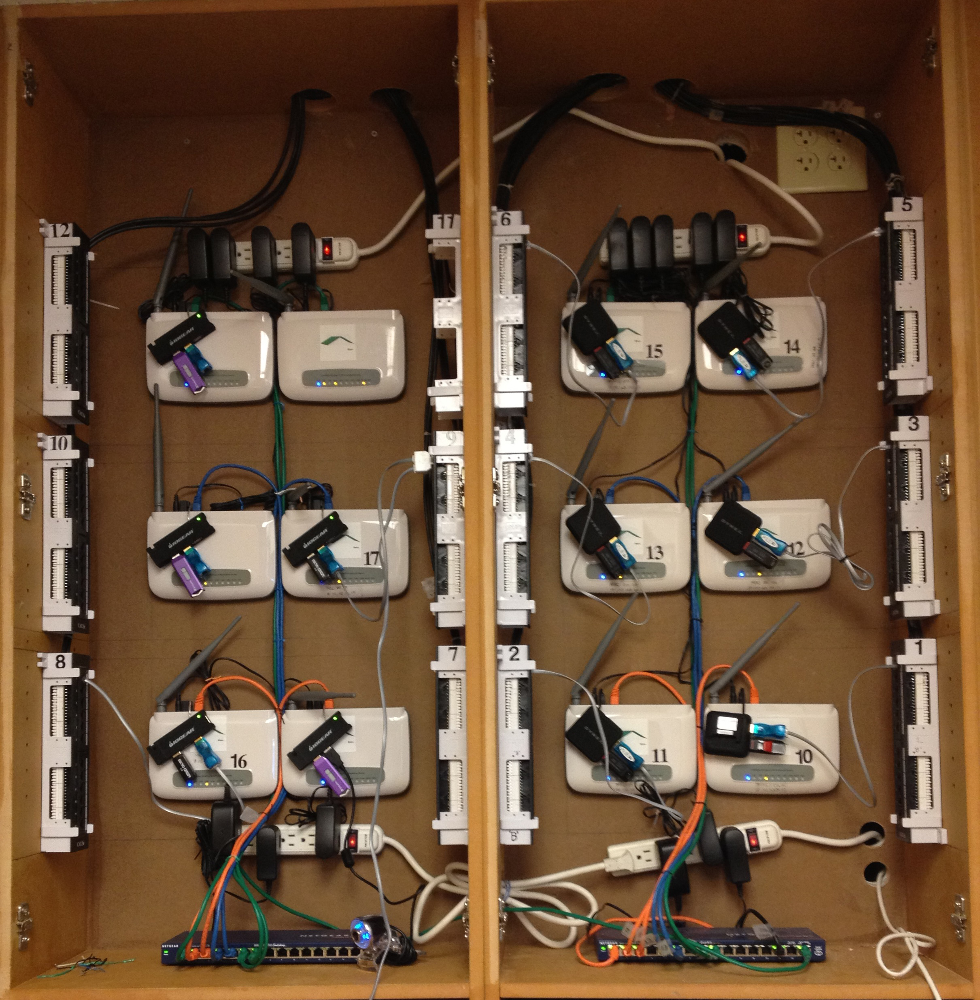

BigSense
Building a Web Service Framework
in Scala
for Sensor Networks
Original Purpose
Combined Sewer Systems
Original Purpose
Combined Sewer Systems
Green Learning Station

Green Learning Station

Green Learning Station

Green Learning Station

Methodology

Linksys Running OpenWRT

Sensor Relays
GPS

Web Frameworks


RestEasy Post Example
@POST
@Path("/{model}")
public Response post(@PathParam("model") String model,
@FormParam("xml") String xml,
@Context HttpservletResponse response,
@Context UriInfo uri) {
ServiceRequest req = new ServiceRequest();
req.setModel(model);
req.setAction("add");
req.setXml(xml);
req.setResponse(response);
req.setUri(uri);
return getServiceAction("add").invokeService(req)
}
RestEasy Delete Example
@DELETE
@Path("/{model}/{identifier}")
public Response post(@PathParam("model") String model,
@PathParam("identifier") String id,
@Context HttpservletResponse response,
@Context UriInfo uri) {
ServiceRequest req = new ServiceRequest();
req.setModel(model);
req.setAction("delete");
req.setIdentifier(id);
req.setResponse(response);
req.setUri(uri);
return getServiceAction("delete").invokeService(req)
}
RestEasy Get Example
@GET
@Path("/userEntitlements/{sso}")
public Response getUserEntitlement(@PathParam("sso") String sso) {
ServiceRequest req = new ServiceRequest();
req.setAction("userEntitlements");
req.setIdentifier(sso);
return getServiceAction("userEntitlements").invokeService(req);
}
Servlets
CSC 201
public void doGet(HttpServletRequest request, HttpServletResponse response) throws ServletException, IOException
{
response.setContentType("text/html"); //all output is HTML
PrintWriter out = response.getWriter(); //all output is done through this
if(request.getParameter("new") == null && request.getSession(false) == null) //start a new session?
{
HTMLOut.writeHeader(out);
HTMLOut.writeMenu(out, NO_SESSION);
HTMLOut.writeBodyNewSession(out);
HTMLOut.writeFooter(out);
}
else if(request.getParameter("new") != null && request.getParameter("new").equals("true")) //answered yes
{
Servlets - Core
service()
protected void service(HttpServletRequest req, HttpServletResponse resp)
throws ServletException, IOException
{
String method = req.getMethod();
if (method.equals(METHOD_GET)) {
long lastModified = getLastModified(req);
if (lastModified == -1) {
// servlet doesn't support if-modified-since, no reason
// to go through further expensive logic
doGet(req, resp);
} else {
long ifModifiedSince = req.getDateHeader(HEADER_IFMODSINCE);
if (ifModifiedSince < lastModified) {
// If the servlet mod time is later, call doGet()
// Round down to the nearest second for a proper compare
// A ifModifiedSince of -1 will always be less
maybeSetLastModified(resp, lastModified);
doGet(req, resp);
} else {
resp.setStatus(HttpServletResponse.SC_NOT_MODIFIED);
}
}
} else if (method.equals(METHOD_HEAD)) {
long lastModified = getLastModified(req);
maybeSetLastModified(resp, lastModified);
doHead(req, resp);
} else if (method.equals(METHOD_POST)) {
doPost(req, resp);
} else if (method.equals(METHOD_PUT)) {
doPut(req, resp);
...Actions
class ActionRequest {
var method: String = "INVALID"
var args : Array[String] = Array()
var parameters : Map[String,Array[Any]] = Map()
var models : List[DataModel] = List()
var data : String = _
var format : FormatTrait = _
var signature : Option[String] = None
override def toString() : String = {
val out : StringBuilder = new StringBuilder("Action Request:\n")
out.append("\tMethod: %s\n".format(method))
...
Actions
class Response (
val status : Int = HttpServletResponse.SC_OK,
val contentType : Option[String] = None,
val newLocations : List[Int] = List()
)
class BinaryResponse(val output : Array[Byte],
status : Int = HttpServletResponse.SC_OK,
contentType : Option[String] = Some("application/octet-stream"),
newLocations: List[Int] = List())
extends Response(status,contentType,newLocations)
class StringResponse(val output : String,
status : Int = HttpServletResponse.SC_OK,
contentType : Option[String] = Some("text/plain"),
newLocations: List[Int] = List())
extends Response(status,contentType,newLocations)
class ViewResponse(val view : Html,
status : Int = HttpServletResponse.SC_OK,
contentType : Option[String] = Some("text/html"),
newLocations: List[Int] = List())
extends Response(status,contentType,newLocations)
Actions
import scala.reflect.BeanProperty
import io.bigsense.db.ServiceDataHandlerTrait
import io.bigsense.validation.ValidatorTrait
trait ActionTrait {
@BeanProperty var dbHandler : ServiceDataHandlerTrait = _
@BeanProperty var validator : ValidatorTrait = _
def runAction(aReq : ActionRequest) : Response
}Actions
class QueryAction extends ActionTrait {
def runAction(aReq: ActionRequest): Response = {
aReq.method match {
case "GET" => {
aReq.args(1) match {
case "Latest" => {
val limit: Int = aReq.args(2).toInt
new StringResponse(aReq.format.renderModels(dbHandler.retrieveLatestSensorData(limit, aReq.parameters)))
}
case "TimestampRange" => {
val start = TimeHelper.timestampToDate(aReq.args(2))
val end = TimeHelper.timestampToDate(aReq.args(3))
new StringResponse(aReq.format.renderModels(dbHandler.retrieveDateRange(start, end, aReq.parameters)))
}
case "DateRange" => {
...
Validation
trait ValidatorTrait {
val BAD_REQUEST = HttpServletResponse.SC_BAD_REQUEST
val NOT_IMPLEMENTED = HttpServletResponse.SC_NOT_IMPLEMENTED
val METHOD_NOT_ALLOWED = HttpServletResponse.SC_METHOD_NOT_ALLOWED
protected def checkInt(obj : Any) : Boolean = {...}
protected def checkLong(obj : Any) : Boolean = {...}
protected def checkDate(obj : String) : Boolean = {...}
def validateRequest(req : ActionRequest) : Option[ValidationError]
}Validation
class QueryActionValidator extends ValidatorTrait {
def validateRequest(aReq: ActionRequest): Option[ValidationError] = {
aReq.method match {
case "GET" => {
if (aReq.args.length >= 2) {
aReq.args(1) match {
case "Latest" => {
if (aReq.args.length != 3) {
return Some(new ValidationError("Latest Requires a Limit Argument", BAD_REQUEST))
}
else if (!checkInt(aReq.args(2))) {
return Some(new ValidationError("Limit Argument Must be an Integer", BAD_REQUEST))
}
}
case "TimestampRange" => {
if (aReq.args.length != 4)
...
Data Formats
package io.bigsense.format
import io.bigsense.model.ModelTrait
trait FormatTrait {
def renderModels(model : List[ModelTrait]) : String
def loadModels(data: String) : List[ModelTrait]
}Data Formats
trait FlatFormatTrait extends FormatTrait {
/**
* overridden in subclasses to render a flat row
*/
protected def renderRow(row :List[String]) : String = "Warning Unimplemented"
protected def renderHeader(row : List[String]) : String = renderRow(row)
def renderModels(model : List[ModelTrait]) : String = {
var ret = new StringBuilder()
if(model.length > 0) {
model.head match {
case x:DataModel => {
ret.append( renderRow( List("TimeStamp","TimeZone","RelayID","SensorID","SensorType","Units","Data") ))
for( m <- model) {
for( sen <- m.asInstanceOf[DataModel].sensors) {
ret.append( renderRow( List(x.timestamp,"UTC",x.uniqueId,sen.uniqueId,sen.stype,sen.units,sen.data)))
}
}
}
...Data Formats
class CSVFormat extends FlatFormatTrait {
protected override def renderRow(row :List[String]) = row.reduceLeft[String] { (a,b) => a + "," + b } + "\n"
}
class TabDelimitedFormat extends FlatFormatTrait {
protected override def renderRow(row :List[String]) = row.reduceLeft[String] { (a,b) => a + "\t" + b } + "\n"
}Data Formats
def loadModels(data : String) : List[ModelTrait] = {
val xml : Elem = XML.loadString(data)
var models = new ListBuffer[DataModel]
for( pack <- xml \\ "package") yield {
var model = new DataModel()
val sensors = pack \ "sensors"
val errors = pack \ "errors"
model.timestamp = (pack \"@timestamp").text.trim()
model.uniqueId = (pack \"@id" ).text.trim()
var sbList = new ListBuffer[SensorModel]()
for( node <- sensors \"sensor") yield {
var sensorData = new SensorModel()
sensorData.uniqueId = (node\"@id").text.trim()...Data Formats
class AgraDataXMLFormat extends FormatTrait {
def renderModels(model : List[ModelTrait]) : String = {
if(model.length > 0) {
model.head match {
case x:DataModel => {
return {
for( pack <- model.asInstanceOf[List[DataModel]]) yield {
{
for( sensor <- pack.sensors) yield {
{sensor.data}
}
} { for(error <- pack.errors) yield {
{error}
}}
}
} .toString()
}...Sense XML
34
50
2.45
Security
trait SecurityManagerTrait {
def securityFilter(request : ActionRequest) : Boolean
@BeanProperty var dbHandler : ServiceDataHandlerTrait = _
}Security
class DisabledSecurityManager extends SecurityManagerTrait {
def securityFilter(request: ActionRequest): Boolean = { true }
}Security
class SignatureSecurityManageer extends SecurityManagerTrait {
def loadPublicKey(relayId : String) : PublicKey = {...}
def securityFilter(req : ActionRequest) : Boolean = {
if( req.method.equals("POST") ) {
if(req.models.length != 1) {
throw new SecurityManagerException("Only single model POST requests are supported with signature verificaiton")
}
if(!req.models(0).isInstanceOf[DataModel]) {
throw new SecurityManagerException("Only data models are supported for verification")
}
val sg = Signature.getInstance("SHA1withRSA");
sg.initVerify(loadPublicKey(req.models(0).uniqueId))
req.signature match {
case None => throw new SecurityManagerException("No Signature Found")
case Some(sig : String) => {
sg.update(req.data.trim().getBytes())
return sg.verify(DatatypeConverter.parseBase64Binary(sig))
}
}
}
//no security for GET/queries yet
true
}
}RSA Signature Verification
34 50 2.45
Conversions
package io.bigsense.conversion
import io.bigsense.model.ModelTrait
trait ConverterTrait {
def convertRow(row : scala.collection.mutable.Map[String,Any],arg: String)
}Conversions
class UnitsConverter extends ConverterTrait {
private def convert(units : String, data : String, direction : String) : (String,String) = {
var retdata : String = units
var retunits : String = data
direction match {
case "Standard" => {
units.toLowerCase() match {
case "c" => {
//Multiply by 9, then divide by 5, then add 32
retdata = (((data.toFloat * 9) / 5) + 32).toString()
retunits = "F"
}
case "mm" => {
retunits = "in"
retdata = (data.toFloat / 25.4).toString()
}
case "mm/s" => {
retunits = "in/s"}
...Conversions
class TimezoneConverter extends ConverterTrait {
def convertRow(row : scala.collection.mutable.Map[String,Any],arg: String) = {
val zone = row("timezone").toString()
val time = row("time").toString()
val df1 : DateFormat = new SimpleDateFormat("yyyy-MM-dd HH:mm:ss.SSS")
df1.setTimeZone(TimeZone.getTimeZone(zone))
val dt : Date = df1.parse(time)
val df2 : DateFormat = new SimpleDateFormat("yyyy-MM-dd HH:mm:ss.SSS")
df2.setTimeZone(TimeZone.getTimeZone(arg))
row("timezone") = arg
row("time") = df2.format(dt)
}
}
BigSense Web Service API

Example Query